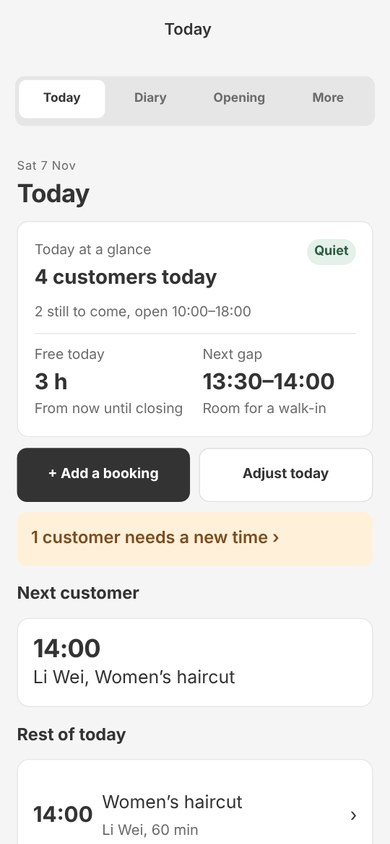
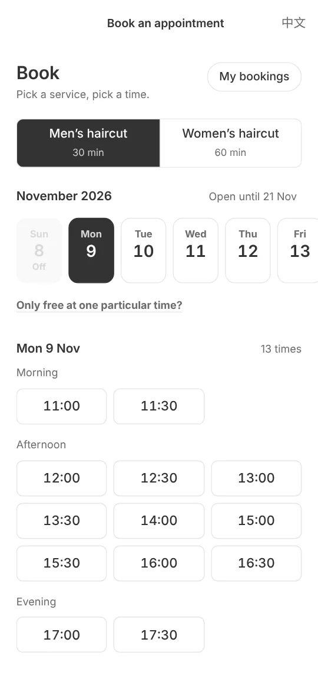
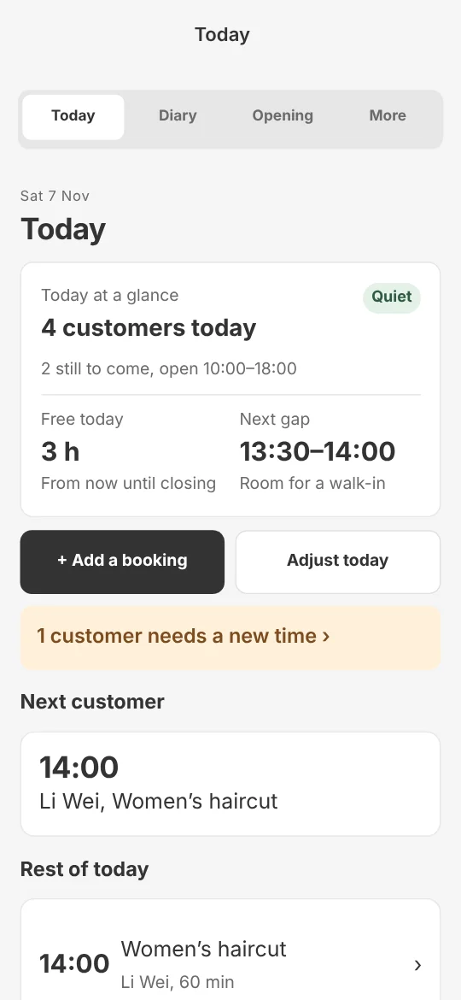

Service & product design · Live product · 2026
Glasgow Salon Booking
One shared diary. Two clear experiences.
LIVELaunched 21 Oct 2026 · used by real customers
glasgow-booking-web.pages.dev↗Open the real site ↗Try the safe demo ↓
- My part
- Problem framing, service blueprint, booking rules, UI for both sides and AI-assisted prototyping
- Scope
- Customer booking + shop diary and availability
- Status
- Live since October 2026 · web version in Chinese and English, with an owner admin
Drag the phone to turn it
Scroll
Try it here
The same rules, on sample data.
- Pick a service and a day
- Take a time that fits
- Open the shop view: it is already in her diary
A customer and shop booking system for a small Glasgow salon run by an older owner, who currently manages every appointment through WeChat, a paper diary and memory.
Live since October 2026 · web version in Chinese and English, with an owner adminVisit the live siteThis is the shop’s real booking site, used by real customers. To try it freely, use the prototype here instead: it runs the same rules on sample data.
- Type
- Service design · booking system
- Stage
- Live web version, launched 21 Oct 2026
- Built with
- TypeScript booking core, Cloudflare Pages + D1, Google sign-in; AI-assisted within rules
Live prototype · demo data only
Use the prototype directly in the frame. Nothing you enter is real: accounts, prices and appointments are demo fixtures.
Running from the local review environment. This prototype is not a live commercial service.
The interactive version is being prepared for public release. Until then, the screens and flows below show the real prototype.
Choose a service → an available day → a start time → review, and book. Then open the shop view: the same booking is in the owner’s diary. Try My bookings to reschedule or cancel. The booking rules run in your browser on sample data; Reset demo starts again.

Project at a glance
Glasgow Salon Booking
- Status
- Live since 21 Oct 2026 · real customers book in Chinese and English
- How it started
- I have had my hair cut here for over a year. From the chair I watched the owner run the shop on WeChat, a paper diary and memory. She rarely names a problem outright, so over many visits and meals I listened for her own words, kept them, and turned them into the pain points this design answers. I am a customer and the designer.
- My part
- All of it, end to end: research, problem framing, service blueprint, booking rules, UI for both sides and the AI-assisted build.
- Built with
- TypeScript booking core · Cloudflare Pages + D1 · Google sign-in
- Proven so far
- End to end in production with real accounts: a booking, a reschedule and a cancellation showed up on every side.
- Not yet
- Usage numbers, a hands-on session with the owner on the app, reminders.
The case in one minute
- 1
The problem
One salon, one owner, every booking in WeChat, a paper diary and her memory. One late arrival and the whole day slides.
- 2
The idea
One shared diary. Customers book a service first, so only times that fit are offered; the owner sees her whole day and only steps in for exceptions.


- 3
The proof
It is live. Real customers have booked since 21 October 2026, in Chinese and English.
Live, real use
The aim is not to put booking online. It is to let the routine run itself, so the owner only steps in for the exceptions — without learning a complicated tool.
08:30 · Before opening
Every morning began with the same question.
“Is anyone booked on Friday? Who do I need to tell?” — her own words. She runs the salon alone, and every booking lived in WeChat, a paper diary and her memory.
The problem
Where it started: from the customer’s chair, I watched one person carry the whole shop’s diary.
How might every customer book easily — without adding work for the owner?
“Is anyone booked on Friday? Who do I need to tell?”
Same booking, different questions
Customer asksOne shared diaryOwner asks
What services?How many today?
Which days are open?Who, when, what, how long?
Which times are free?Where is free time?
What did I book?Who is affected if I close?
How people get in
- Scan the shop’s QR code
- A website in Chinese or English
- Pick a service, then a time that fits
- It is in the owner’s diary
We first planned a WeChat mini program, then chose a website: Chinese and foreign customers alike book by scanning one code, and the owner can still add phone or walk-in customers by name.
10:00 · The shop opens
So the shop got one shared diary.
Customers only see the times that fit. The owner sees her whole day. Nothing has to be passed on by message.
How the system works
The idea: routine bookings run themselves, and the owner stays in charge of the exceptions.
Service blueprint: who does what
Routine work moves to the system. The owner acts in only two places.
When the owner suddenly can’t open
- 1Customer books 13:00
- 2Owner closes 13:00–14:00
- 3Booking becomes “to reschedule”
- 4Customer picks a new time, service kept
- 5Owner’s diary updates
Tested end to end across both sides of the prototype.
Design principles
Before drawing a single screen, I wrote down the rules that protect her day.
Booking rules that protect the owner
The routine runs itself
Owner handles exceptions only.
Duration decides availability
150-min gap: yes to a cut, no to a colour.
Only valid start times
No “17:45” — the day stays unfragmented.
Recommend, don’t decide
Suggested times save effort; any valid time stays open.
“Not open yet” ≠ “full”
Owner sets how far ahead to open; no same-day bookings.
Protect long gaps
Suggestions fill small gaps first, so long blocks stay free for colours.
Never delete a booking
Closures move bookings to rescheduling.
Low learning cost
Starts from “today”, like her paper diary.
Deliberately not in V1
- Online payment
- Coupons & points
- Multiple shops
- Parallel services
- No-show penalties
- AI chat
Design details
Customers book by scanning a QR code; the owner sees the same booking in her day. These are the real screens.
Close-ups of the decisions that carry the product. Select any image to enlarge it.
Duration is chosen first
Each service shows its length, and the earliest free time updates with it, because duration decides what fits.
Today, answered in one card
How many customers, how much time is still free and the next gap for a walk-in — the questions she asks every morning — with Add and Adjust one tap away.
Close a few hours on a timeline
Tap a start, then an end, in 15-minute steps. Bookings and earlier closures are marked, and the summary says who is affected before anything closes — bookings are never deleted.
Customers see why, and what to do
A closure turns the booking into “Needs new time” with a one-tap way to choose again.
18:05 · After hours
Behind the screens: one set of rules.
The rules were written first, then built and tested, so both sides of the shop always agree.
How it was built
From written rules to a site real customers use.
The logic was fixed before any screen: pain points, V1 scope, three user flows, then technical rules for the AI tools. Visual polish came last.
- 01
One booking core
Availability, booking, rescheduling, closures and admin actions live in one shared TypeScript core used by both sides.
- 02
Guardrails for AI
A written spec, folder rules and a list of what the AI may and may not change kept generated code inside the design.
- 03
Two front ends
A customer flow and a shop diary, both phone-sized. We first planned a WeChat mini program, then chose a website instead: Chinese and non-Chinese customers alike book by scanning one QR code.
- 04
Launched on the web
The release is a website: Chinese and English booking pages and an owner admin share one database, and every booking is re-checked on the server. Browsing is open; booking needs a Google sign-in.
- 05
Public demo
The live website’s own screens and booking rules run in the browser on sample data, in Chinese and English, so anyone can try both sides without touching real bookings.
Process & iteration
How the work moved, step by step.
How I worked
- 01Pain points
- 02V1 scope
- 03Three user flows
- 04Rules + AI guardrails
- 05Build & test
Booking rules, data contract and what the AI may change were fixed before any code was written.
Customer flow
BeforeOne long schedule list on the home screen
AfterThree steps: week overview → valid times → confirm
Detailed diary folded away; Back keeps the selection.
Owner’s side
BeforeAbout 10 scattered settings pages
After4 time-first tabs: Today · Diary · Availability · More
“No-show” moved under more actions, so the routine stays automatic.
Two sides, one core
BeforeCustomer and owner sides built as separate pieces
AfterOne shared booking core; every change written into the spec first
e.g. how the owner adds a non-WeChat customer was written up as a spec change before any code moved.
After launch: one product, not two
BeforeEnglish pages were a separate, older interface; time off meant one day at a time; walk-ins needed an account
AfterOne set of screens with an English text layer; several days off at once or a 15-minute timeline; walk-ins added by name and phone
Found by walking every flow on the live site myself; in the public demo now, and goes live with the next deploy.
Owner tasks, measured in taps
Target: 3–4 taps. Closing a future day took 6 at launch; the post-launch redesign brings it to 5, including one confirmation — still one over target.
18:30 · Closed
Where it stands tonight.
Live with real customers since 21 October. What is proven, what is only illustrated, and what still needs the owner.
Launch record
What is real today
- Live since 21 October 2026, at glasgow-booking-web.pages.dev ↗
- Real customers book in Chinese and English; the owner has her own admin.
- Checked end to end in production with real accounts: a booking, a reschedule and a cancellation showed up on every side.
- One shared database (Cloudflare Pages + D1) and Google sign-in.
Still to show
What being live does not prove
- That it saves the owner time: needs usage data and watching her use it.
- The “same day” comparison above follows the system’s rules; it is not measured.
- Reminders are not released yet.
Challenges, gaps & opportunities
What is still hard, honestly.
What is hard
A low-confidence user
The owner is used to WeChat and a paper diary. Every extra step is a reason to go back to them, so the shop side had to shrink to four tabs.
Durations are uncertain
Hair length and colour change how long a service takes, so estimates can still overrun.
Two kinds of customer
WeChat suits Chinese customers but not everyone else, and Google sign-in may not work inside WeChat. Launching on the web with Chinese and English pages serves both, at the cost of that sign-in friction.
Not done yet
- Post-launch fixes are built and tested, waiting for the next deploy
- Testing on real iPhone, Android and the WeChat in-app browser (which may block Google sign-in)
- No SMS or email reminders yet
- A hands-on session with the owner on the app, on site
- Free hosting tier: some queries sit above its CPU guideline
Opportunities
Fewer messages
If customers can see free times themselves, most “are you open?” messages disappear.
A wider local audience
A non-WeChat entry opens the shop to local customers who would never add a private WeChat.
A pattern for other small shops
The same core could serve other one-person services with changing hours.
How success would be measured
- Owner tasks in four taps or fewer
- Share of bookings made without chatting
- Time spent rescheduling after a closure
- Owner still using it after a month
Proposed measures for a pilot, not results.
Validation plan
What I learned from the chair, and what I still need to test with her.
Observed and talked through · next, a hands-on test
The problems on this page come from over a year as a regular customer: watching how the shop runs, and listening for the owner’s own words rather than asking her to list problems. What has not happened yet is the owner using the finished app while I watch.
Done · from the customer’s chair
Over a year of haircuts I watched how a request moved from a WeChat message to the paper diary, and what broke when plans changed. She would not have listed her problems if asked, so in everyday talk — in the shop and over meals — I noted the moments she put one into words, kept her exact phrases and grouped them into pain points. When I showed her the idea, she wanted to try it.
Next · teach her, then watch a real day
On site: set it up with her, photograph the shop, then watch her handle a booking, a change and a closure. Record completion, errors, time and help needed.
Validate the operating rules
Confirm service lengths, opening windows, same-day policy, buffers and preferred language with the owner. Demo fixtures are not final business rules.
Progress & release plan
Where the shop’s diary goes from here.
The prototype on this page runs the same rules as the live site, in the browser, on sample data. Automatic reminders are not released yet.
- Now · live website: Chinese and English booking + owner admin, one shared database
- Next · fix launch bugs and test on real phones and the WeChat in-app browser
- Then · teach the owner on site and watch her use it; photos of the shop; anonymous usage stats on this page
- Later · reminders on the same booking core
Being live is not proof that it works well for the owner or her customers. That still needs real-use data and watching the owner use it.
Download case PDF ↓Thanks for reading
One shared diary, live in a real salon.
Open the real site ↗Download case PDF ↓Email meNext case: LOOK →